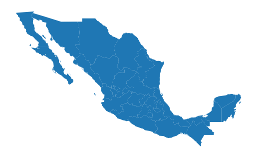
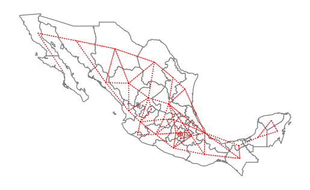
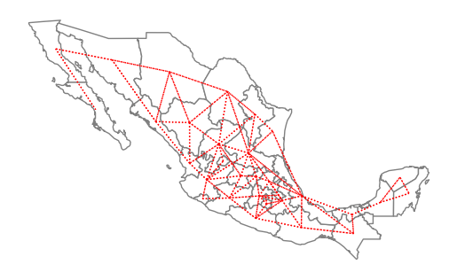
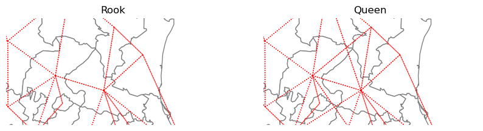
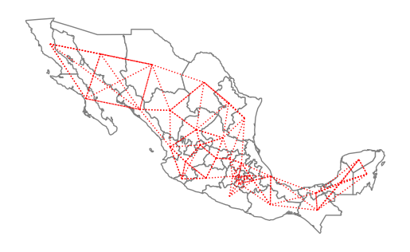
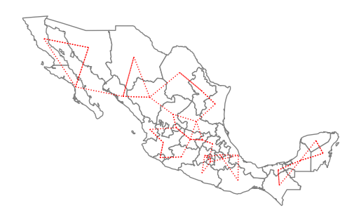
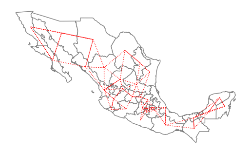
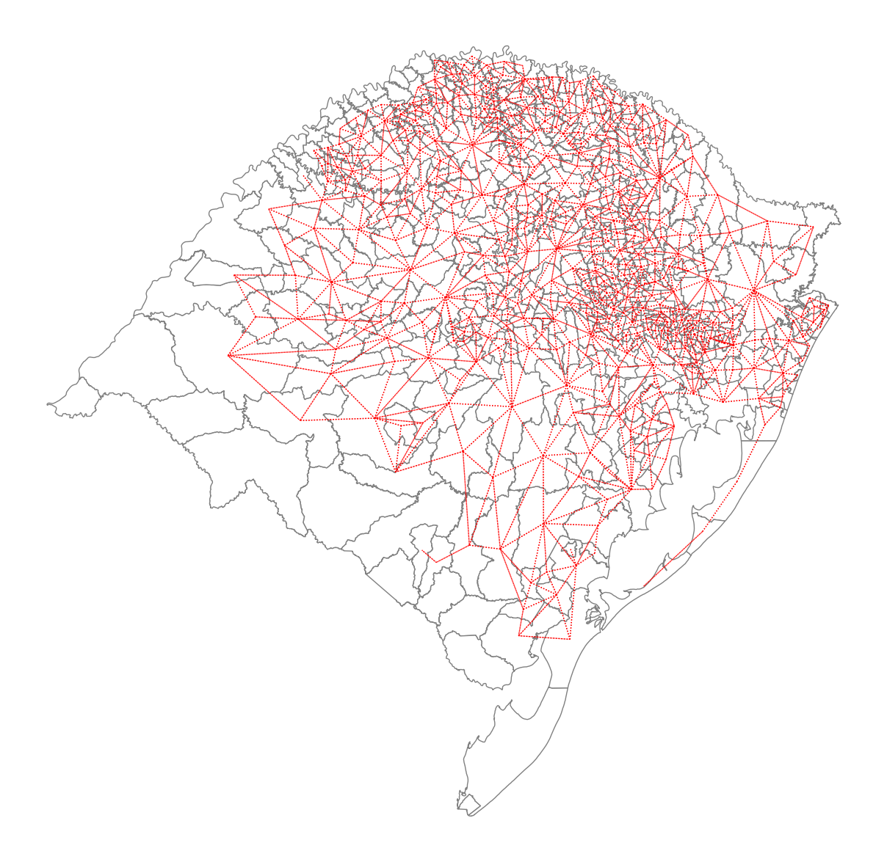
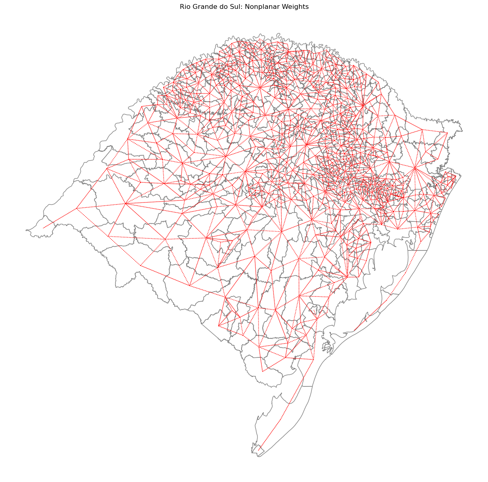

Spatial Weights¶
import os
import sys
sys.path.append(os.path.abspath(".."))
import libpysal
libpysal.examples.available()
| Name | Description | Installed | |
|---|---|---|---|
| 0 | 10740 | Albuquerque, New Mexico, Census 2000 Tract Dat... | True |
| 1 | AirBnB | Airbnb rentals, socioeconomics, and crime in C... | True |
| 2 | Atlanta | Atlanta, GA region homicide counts and rates | False |
| 3 | Baltimore | Baltimore house sales prices and hedonics | True |
| 4 | Bostonhsg | Boston housing and neighborhood data | False |
| ... | ... | ... | ... |
| 94 | taz | Traffic Analysis Zones in So. California | True |
| 95 | tokyo | Tokyo Mortality data | True |
| 96 | us_income | Per-capita income for the lower 48 US states 1... | True |
| 97 | virginia | Virginia counties shapefile | True |
| 98 | wmat | Datasets used for spatial weights testing | True |
99 rows × 3 columns
libpysal.examples.explain("mexico")
mexico
======
Decennial per capita incomes of Mexican states 1940-2000
--------------------------------------------------------
* mexico.csv: attribute data. (n=32, k=13)
* mexico.gal: spatial weights in GAL format.
* mexicojoin.shp: Polygon shapefile. (n=32)
Data used in Rey, S.J. and M.L. Sastre Gutierrez. (2010) "Interregional inequality dynamics in Mexico." Spatial Economic Analysis, 5: 277-298.
Weights from GeoDataFrames¶
import geopandas
pth = libpysal.examples.get_path("mexicojoin.shp")
gdf = geopandas.read_file(pth)
from libpysal.weights import KNN, Queen, Rook
%matplotlib inline
import matplotlib.pyplot as plt
ax = gdf.plot()
ax.set_axis_off()

Contiguity Weights¶
The first set of spatial weights we illustrate use notions of contiguity to define neighboring observations. Rook neighbors are those states that share an edge on their respective borders:
w_rook = Rook.from_dataframe(gdf)
/tmp/ipykernel_4352/1853022568.py:1: FutureWarning: `use_index` defaults to False but will default to True in future. Set True/False directly to control this behavior and silence this warning
w_rook = Rook.from_dataframe(gdf)
w_rook.n
32
w_rook.pct_nonzero
12.6953125
ax = gdf.plot(edgecolor="grey", facecolor="w")
f, ax = w_rook.plot(
gdf,
ax=ax,
edge_kws=dict(color="r", linestyle=":", linewidth=1),
node_kws=dict(marker=""),
)
ax.set_axis_off()

gdf.head()
| POLY_ID | AREA | CODE | NAME | PERIMETER | ACRES | HECTARES | PCGDP1940 | PCGDP1950 | PCGDP1960 | ... | GR9000 | LPCGDP40 | LPCGDP50 | LPCGDP60 | LPCGDP70 | LPCGDP80 | LPCGDP90 | LPCGDP00 | TEST | geometry | |
|---|---|---|---|---|---|---|---|---|---|---|---|---|---|---|---|---|---|---|---|---|---|
| 0 | 1 | 7.252751e+10 | MX02 | Baja California Norte | 2040312.385 | 1.792187e+07 | 7252751.376 | 22361.0 | 20977.0 | 17865.0 | ... | 0.05 | 4.35 | 4.32 | 4.25 | 4.40 | 4.47 | 4.43 | 4.48 | 1.0 | MULTIPOLYGON (((-113.13972 29.01778, -113.2405... |
| 1 | 2 | 7.225988e+10 | MX03 | Baja California Sur | 2912880.772 | 1.785573e+07 | 7225987.769 | 9573.0 | 16013.0 | 16707.0 | ... | 0.00 | 3.98 | 4.20 | 4.22 | 4.39 | 4.46 | 4.41 | 4.42 | 2.0 | MULTIPOLYGON (((-111.20612 25.80278, -111.2302... |
| 2 | 3 | 2.731957e+10 | MX18 | Nayarit | 1034770.341 | 6.750785e+06 | 2731956.859 | 4836.0 | 7515.0 | 7621.0 | ... | -0.05 | 3.68 | 3.88 | 3.88 | 4.04 | 4.13 | 4.11 | 4.06 | 3.0 | MULTIPOLYGON (((-106.62108 21.56531, -106.6475... |
| 3 | 4 | 7.961008e+10 | MX14 | Jalisco | 2324727.436 | 1.967200e+07 | 7961008.285 | 5309.0 | 8232.0 | 9953.0 | ... | 0.03 | 3.73 | 3.92 | 4.00 | 4.21 | 4.32 | 4.30 | 4.33 | 4.0 | POLYGON ((-101.5249 21.85664, -101.5883 21.772... |
| 4 | 5 | 5.467030e+09 | MX01 | Aguascalientes | 313895.530 | 1.350927e+06 | 546702.985 | 10384.0 | 6234.0 | 8714.0 | ... | 0.13 | 4.02 | 3.79 | 3.94 | 4.21 | 4.32 | 4.32 | 4.44 | 5.0 | POLYGON ((-101.8462 22.01176, -101.9653 21.883... |
5 rows × 35 columns
w_rook.neighbors[0] # the first location has two neighbors at locations 1 and 22
[1, 22]
gdf["NAME"][[0, 1, 22]]
0 Baja California Norte
1 Baja California Sur
22 Sonora
Name: NAME, dtype: str
So, Baja California Norte has 2 rook neighbors: Baja California Sur and Sonora.
Queen neighbors are based on a more inclusive condition that requires only a shared vertex between two states:
w_queen = Queen.from_dataframe(gdf)
/tmp/ipykernel_4352/1138514842.py:1: FutureWarning: `use_index` defaults to False but will default to True in future. Set True/False directly to control this behavior and silence this warning
w_queen = Queen.from_dataframe(gdf)
w_queen.n == w_rook.n
True
(w_queen.pct_nonzero > w_rook.pct_nonzero) == (w_queen.n == w_rook.n)
True
ax = gdf.plot(edgecolor="grey", facecolor="w")
f, ax = w_queen.plot(
gdf,
ax=ax,
edge_kws=dict(color="r", linestyle=":", linewidth=1),
node_kws=dict(marker=""),
)
ax.set_axis_off()

w_queen.histogram
[(np.int64(1), np.int64(1)),
(np.int64(2), np.int64(6)),
(np.int64(3), np.int64(6)),
(np.int64(4), np.int64(6)),
(np.int64(5), np.int64(5)),
(np.int64(6), np.int64(2)),
(np.int64(7), np.int64(3)),
(np.int64(8), np.int64(2)),
(np.int64(9), np.int64(1))]
w_rook.histogram
[(np.int64(1), np.int64(1)),
(np.int64(2), np.int64(6)),
(np.int64(3), np.int64(7)),
(np.int64(4), np.int64(7)),
(np.int64(5), np.int64(3)),
(np.int64(6), np.int64(4)),
(np.int64(7), np.int64(3)),
(np.int64(8), np.int64(1))]
c9 = [idx for idx, c in w_queen.cardinalities.items() if c == 9]
gdf["NAME"][c9]
28 San Luis Potosi
Name: NAME, dtype: str
w_rook.neighbors[28]
[5, 6, 7, 27, 29, 30, 31]
w_queen.neighbors[28]
[3, 5, 6, 7, 24, 27, 29, 30, 31]
import numpy as np
f, ax = plt.subplots(1, 2, figsize=(10, 6), subplot_kw=dict(aspect="equal"))
gdf.plot(edgecolor="grey", facecolor="w", ax=ax[0])
w_rook.plot(
gdf,
ax=ax[0],
edge_kws=dict(color="r", linestyle=":", linewidth=1),
node_kws=dict(marker=""),
)
ax[0].set_title("Rook")
ax[0].axis(np.asarray([-105.0, -95.0, 21, 26]))
ax[0].axis("off")
gdf.plot(edgecolor="grey", facecolor="w", ax=ax[1])
w_queen.plot(
gdf,
ax=ax[1],
edge_kws=dict(color="r", linestyle=":", linewidth=1),
node_kws=dict(marker=""),
)
ax[1].set_title("Queen")
ax[1].axis("off")
ax[1].axis(np.asarray([-105.0, -95.0, 21, 26]))
(np.float64(-105.0), np.float64(-95.0), np.float64(21.0), np.float64(26.0))

w_knn = KNN.from_dataframe(gdf, k=4)
w_knn.histogram
[(np.int64(4), np.int64(32))]
ax = gdf.plot(edgecolor="grey", facecolor="w")
f, ax = w_knn.plot(
gdf,
ax=ax,
edge_kws=dict(color="r", linestyle=":", linewidth=1),
node_kws=dict(marker=""),
)
ax.set_axis_off()

Weights from shapefiles (without geopandas)¶
pth = libpysal.examples.get_path("mexicojoin.shp")
from libpysal.weights import KNN, Queen, Rook
w_queen = Queen.from_shapefile(pth)
/home/runner/micromamba/envs/test/lib/python3.14/site-packages/libpysal/io/iohandlers/pyShpIO.py:232: FutureWarning: Objects based on the `Geometry` class will deprecated and removed in a future version of libpysal.
shp = self.type(vertices, holes)
/home/runner/micromamba/envs/test/lib/python3.14/site-packages/libpysal/cg/shapes.py:1374: FutureWarning: Objects based on the `Geometry` class will deprecated and removed in a future version of libpysal.
self._part_rings = list(map(Ring, vertices))
/home/runner/micromamba/envs/test/lib/python3.14/site-packages/libpysal/io/iohandlers/pyShpIO.py:247: FutureWarning: Objects based on the `Geometry` class will deprecated and removed in a future version of libpysal.
shp = self.type(vertices)
/home/runner/micromamba/envs/test/lib/python3.14/site-packages/libpysal/cg/shapes.py:1377: FutureWarning: Objects based on the `Geometry` class will deprecated and removed in a future version of libpysal.
self._part_rings = [Ring(vertices)]
w_rook = Rook.from_shapefile(pth)
w_knn1 = KNN.from_shapefile(pth)
/home/runner/micromamba/envs/test/lib/python3.14/site-packages/libpysal/cg/shapes.py:1265: FutureWarning: Objects based on the `Geometry` class will deprecated and removed in a future version of libpysal.
self._centroid = Point((cx, cy))
/home/runner/micromamba/envs/test/lib/python3.14/site-packages/libpysal/weights/distance.py:164: UserWarning: The weights matrix is not fully connected:
There are 2 disconnected components.
W.__init__(self, neighbors, id_order=ids, **kwargs)
The warning alerts us to the fact that using a first nearest neighbor criterion to define the neighbors results in a connectivity graph that has more than a single component. In this particular case there are 2 components which can be seen in the following plot:
ax = gdf.plot(edgecolor="grey", facecolor="w")
f, ax = w_knn1.plot(
gdf,
ax=ax,
edge_kws=dict(color="r", linestyle=":", linewidth=1),
node_kws=dict(marker=""),
)
ax.set_axis_off()

The two components are separated in the southern part of the country, with the smaller component to the east and the larger component running through the rest of the country to the west. For certain types of spatial analytical methods, it is necessary to have a adjacency structure that consists of a single component. To ensure this for the case of Mexican states, we can increase the number of nearest neighbors to three:
w_knn3 = KNN.from_shapefile(pth, k=3)
/home/runner/micromamba/envs/test/lib/python3.14/site-packages/libpysal/io/iohandlers/pyShpIO.py:232: FutureWarning: Objects based on the `Geometry` class will deprecated and removed in a future version of libpysal.
shp = self.type(vertices, holes)
/home/runner/micromamba/envs/test/lib/python3.14/site-packages/libpysal/cg/shapes.py:1374: FutureWarning: Objects based on the `Geometry` class will deprecated and removed in a future version of libpysal.
self._part_rings = list(map(Ring, vertices))
/home/runner/micromamba/envs/test/lib/python3.14/site-packages/libpysal/cg/shapes.py:1265: FutureWarning: Objects based on the `Geometry` class will deprecated and removed in a future version of libpysal.
self._centroid = Point((cx, cy))
/home/runner/micromamba/envs/test/lib/python3.14/site-packages/libpysal/io/iohandlers/pyShpIO.py:247: FutureWarning: Objects based on the `Geometry` class will deprecated and removed in a future version of libpysal.
shp = self.type(vertices)
/home/runner/micromamba/envs/test/lib/python3.14/site-packages/libpysal/cg/shapes.py:1377: FutureWarning: Objects based on the `Geometry` class will deprecated and removed in a future version of libpysal.
self._part_rings = [Ring(vertices)]
ax = gdf.plot(edgecolor="grey", facecolor="w")
f, ax = w_knn3.plot(
gdf,
ax=ax,
edge_kws=dict(color="r", linestyle=":", linewidth=1),
node_kws=dict(marker=""),
)
ax.set_axis_off()

Lattice Weights¶
from libpysal.weights import lat2W
w = lat2W(4, 3)
w.n
12
w.pct_nonzero
23.61111111111111
w.neighbors
{0: [3, 1],
3: [0, 6, 4],
1: [0, 4, 2],
4: [1, 3, 7, 5],
2: [1, 5],
5: [2, 4, 8],
6: [3, 9, 7],
7: [4, 6, 10, 8],
8: [5, 7, 11],
9: [6, 10],
10: [7, 9, 11],
11: [8, 10]}
Handling nonplanar geometries¶
rs = libpysal.examples.get_path("map_RS_BR.shp")
import geopandas as gpd
rs_df = gpd.read_file(rs)
wq = libpysal.weights.Queen.from_dataframe(rs_df)
/tmp/ipykernel_4352/750426907.py:2: FutureWarning: `use_index` defaults to False but will default to True in future. Set True/False directly to control this behavior and silence this warning
wq = libpysal.weights.Queen.from_dataframe(rs_df)
/home/runner/micromamba/envs/test/lib/python3.14/site-packages/libpysal/weights/contiguity.py:354: UserWarning: The weights matrix is not fully connected:
There are 30 disconnected components.
There are 29 islands with ids: 0, 4, 23, 27, 80, 94, 101, 107, 109, 119, 122, 139, 169, 175, 223, 239, 247, 253, 254, 255, 256, 261, 276, 291, 294, 303, 321, 357, 374.
W.__init__(self, neighbors, ids=ids, **kw)
len(wq.islands)
29
wq[0]
{}
wf = libpysal.weights.fuzzy_contiguity(rs_df)
wf.islands
[]
wf[0]
{239: 1.0, 59: 1.0, 152: 1.0, 23: 1.0}
plt.rcParams["figure.figsize"] = (20, 15)
ax = rs_df.plot(edgecolor="grey", facecolor="w")
f, ax = wq.plot(
rs_df,
ax=ax,
edge_kws=dict(color="r", linestyle=":", linewidth=1),
node_kws=dict(marker=""),
)
ax.set_axis_off()
/home/runner/micromamba/envs/test/lib/python3.14/site-packages/libpysal/weights/weights.py:1446: UserWarning: Geometry is in a geographic CRS. Results from 'centroid' are likely incorrect. Use 'GeoSeries.to_crs()' to re-project geometries to a projected CRS before this operation.
centroids = gdf.loc[neighbors].centroid
/home/runner/micromamba/envs/test/lib/python3.14/site-packages/libpysal/weights/weights.py:1458: UserWarning: Geometry is in a geographic CRS. Results from 'centroid' are likely incorrect. Use 'GeoSeries.to_crs()' to re-project geometries to a projected CRS before this operation.
centroids = gdf.centroid

ax = rs_df.plot(edgecolor="grey", facecolor="w")
f, ax = wf.plot(
rs_df,
ax=ax,
edge_kws=dict(color="r", linestyle=":", linewidth=1),
node_kws=dict(marker=""),
)
ax.set_title("Rio Grande do Sul: Nonplanar Weights")
ax.set_axis_off()
/home/runner/micromamba/envs/test/lib/python3.14/site-packages/libpysal/weights/weights.py:1446: UserWarning: Geometry is in a geographic CRS. Results from 'centroid' are likely incorrect. Use 'GeoSeries.to_crs()' to re-project geometries to a projected CRS before this operation.
centroids = gdf.loc[neighbors].centroid
/home/runner/micromamba/envs/test/lib/python3.14/site-packages/libpysal/weights/weights.py:1458: UserWarning: Geometry is in a geographic CRS. Results from 'centroid' are likely incorrect. Use 'GeoSeries.to_crs()' to re-project geometries to a projected CRS before this operation.
centroids = gdf.centroid
